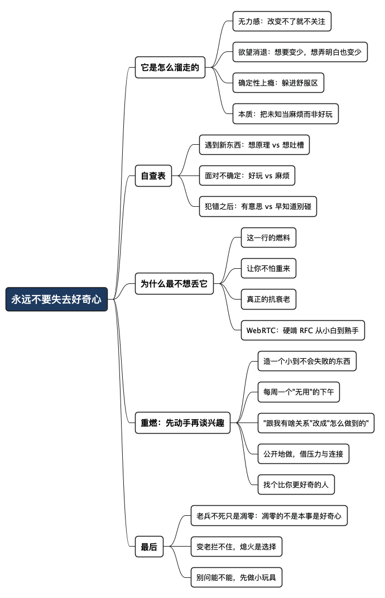

永远不要失去好奇心
Posted on 一 10 8月 2026 in Journal
| Abstract | 永远不要失去好奇心 |
|---|---|
| Authors | Walter Fan |
| Category | learning note |
| Version | v1.0 |
| Updated | 2026-08-10 |
| License | CC-BY-NC-ND 4.0 |
永远不要失去好奇心
前几天有个新框架挺火，放在两年前，我大概当晚就会 clone 下来跑个 demo，折腾到半夜，第二天顶着黑眼圈还兴致勃勃地跟人安利。可这次我看了一眼 star 数，随手加了个书签，然后——就没有然后了。
我愣是没打开它。心里冒出来的第一句话是：“这跟我有啥关系。”
这句“跟我有啥关系”，最近出现得越来越频繁。以前乐此不疲的东西，现在提不起劲；以前熬夜也要弄明白的问题，现在觉得“不懂也不影响吃饭”。我盘了盘，这不是变懒，也不是没时间——是我对不确定的未来，慢慢失去了好奇。
我今年也算是个老程序员了，写了大半辈子代码和技术文档。我很清楚：对一个知识工作者来说，好奇心不是锦上添花，是发动机。这篇不是鸡汤，是我写给自己的一份自救清单——好奇心可以熄火，也可以重新点着。
- 我最怕丢的三样：健康、爱与被爱、好奇心。前两样大家都懂，第三样最容易在不知不觉中溜走。
- 好奇心的敌人不是年龄，是“反正也改变不了”和“得到了也没那么爽”这两种心态。
好奇心是怎么一点点溜走的
我观察自己，好奇心的流失不是断崖式的，是温水煮青蛙，大概走了这么几步。
第一步，是“无力感”。 很多事情你眼睁睁看着它往不好的方向走，却使不上劲。改变不了，索性就不再关注、不再花心思。关注一件自己无能为力的事，太累了，大脑很诚实地帮你省电。
第二步，是“欲望消退”。 年轻时想要的东西太多，一样样去够。现在很多欲望淡了，不那么渴望了，甚至得到了也没那么兴奋。这本是好事——人成熟了。可副作用是：当“想要”变少，“想弄明白”也跟着变少了。 好奇心和欲望，本是一根藤上的两个瓜。
第三步，是“确定性上瘾”。 干这行久了，手里攒了一堆“我早就知道会这样”的经验。经验是好东西，但它有个暗面：你越来越倾向于待在自己确定的地方，因为那里安全、舒服、不会出错。而好奇心恰恰要求你走进不确定——去碰你不懂的、可能会栽跟头的东西。
好奇心的本质，是对不确定性还抱有兴趣，而不是恐惧。
一旦你把“未知”默认成“麻烦”而不是“好玩”，好奇心就开始熄火了。
老子讲“为学日益，为道日损”，我年轻时不懂，现在有点懂了：知道得越多，越容易自以为“已经懂了”，反而把那点“还想再看看”的劲儿给磨没了。真正麻烦的不是无知，是自以为已经知道。
一个自查表：你的好奇心还在不在
我给自己做了个粗糙的对照表，用来判断哪根弦松了。你也可以拿去照照镜子。
| 维度 | 好奇心还在 | 好奇心在熄火 |
|---|---|---|
| 遇到新东西 | “这怎么做到的？”先想原理 | “又一个轮子”先想吐槽 |
| 面对不确定 | 觉得好玩，想探一探 | 觉得麻烦，绕着走 |
| 学习动机 | 为了搞明白，学完很爽 | 为了不落伍，学完很累 |
| 犯错之后 | “有意思，原来是这样” | “早知道就不碰了” |
| 聊天时 | 追着问“然后呢” | 急着下结论“不就是……” |
如果你发现自己越来越多地落在右边这栏，别慌，也别自责。这不是变笨，是安全模式开久了，发动机怠速太久快积碳了。 需要的不是打鸡血，是重新给它点火。
为什么我最不想丢的第三样是它
健康和爱排前两位，不用多说。为什么好奇心能排第三，甚至排在很多人看重的“成就”“财富”前面？
因为对我这种人来说，好奇心是把日子过成“活着”而不是“熬着”的那个开关。
- 它是这一行的燃料。 我干开发、做架构、当 service owner，本质上都是在和未知打交道：一个查不出根因的线上故障、一个没人趟过的技术选型、一个含糊不清的需求。如果失去了好奇心，我看这些只会觉得烦；有好奇心，我才会觉得——这是个谜题，我想解开它。一旦对未知只剩下厌烦，我也就不想再干这行了。
- 它让你不怕“重来”。 我这些年最自豪的几个东西，无一例外都是从“我不太懂，但想试试”开始的。写那本关于度量驱动开发的书是这样，啃 WebRTC 那套协议栈是这样，转去搞机器人、又转来做协作平台也是这样。每次都是好奇心先动，能力后到。
- 它是抗衰老的。 我不怕头发白，怕的是眼神里没光。见过太多人四十岁就“毕业”了——不是被公司毕业，是被自己毕业：什么都懂了，什么都不想学了，剩下的日子就是重复。那种“提前退休”的状态，比白发可怕得多。
拿 WebRTC 来说吧。刚接触那会儿，我基本是个小白：SDP 是啥、ICE 怎么打洞、DTLS-SRTP 到底在加密什么、为什么两台机器隔着 NAT 就是连不上——一堆缩写像天书。那时候没有现在这么多现成的教程和大模型可问，我只能硬啃 RFC：SDP、RTP/RTCP、STUN、TURN、ICE……一篇一篇地读，读不懂就画图、就写笔记、就自己敲个最小例子跑一遍，看抓包里到底发生了什么。笔记攒了厚厚一摞，demo 写了一个又一个，很多个晚上就是对着 Wireshark 一帧一帧地看。就这么从小白啃成了熟手。
可惜的是，现在换了岗位，手上已经没有机会再碰这套东西了。但奇怪的是，我一点不觉得那段时间白费——当年那股“非把它弄明白不可”的热情，我到现在都记得清清楚楚，也依然为那段硬啃下来的日子感到自豪。让我自豪的从来不是“我懂 WebRTC”这个结果，而是“我曾经这么好奇过、这么较过劲”这件事本身。
王阳明讲“事上练”——道理光想没用，得在具体的事上磨。好奇心也一样，它不是你在沙发上“决定”重新拥有的，是你动手碰了一个新东西之后，才被重新点燃的。
重燃好奇心：给自己的一套可落地办法
我不信“找回初心”这种口号，我信具体动作。下面这套是我准备逼自己执行的，取向是“先动手，再谈兴趣”——因为兴趣往往是行动的结果，不是前提。
-
先造一个小到不可能失败的东西
别一上来就立“做个惊天动地的大项目”的 flag，那只会让你更不敢开始。给自己定一个周末就能跑起来的最小玩具：一个自动整理照片的小脚本、一个给自己用的命令行工具、一个 200 行的小网页。目标不是有用，是重新体验“我做出来了”那一下的爽感。 好奇心是被正反馈喂大的。 -
每周留一个“无用”的下午
固定一段时间，只用来碰跟 KPI、跟饭碗完全无关的东西。可以是一个新语言、一篇看不懂的论文、一个别人的开源项目。关键词是“无用”——一旦掺进“这对我有没有用”的算计，好奇心就变成了任务，火就小了。 -
把“这跟我有啥关系”改成“这怎么做到的”
这是最便宜也最有效的一招：纯粹换个提问方式。前者是关门，后者是开门。看到任何让你想吐槽“又一个”的新东西，强迫自己先问一句原理。问着问着，你会发现自己又坐不住了——这恰恰是好奇心还没死透的证据。 -
公开地做，别偷偷做
把你在折腾的东西写出来、发出去，哪怕很粗糙。写博客、发 GitHub、跟同事显摆都行。公开会带来两样东西：一点点压力（逼你做完），和一点点连接（有人回应）。这两样都是好奇心的助燃剂。我写博客这么多年，很大程度上就是靠这个续命。 -
给自己找个“比你更好奇”的人
好奇心是会传染的。多跟那些眼里有光、一聊起某个话题就刹不住车的人待在一起，少跟那些张口就是“这有啥用”“早就那样了”的人耗着。环境对状态的影响，比意志力大得多。
一句话总结：
好奇心不是等来的兴致，是练出来的习惯。
先动手做一件小到不会失败的事，火自然就着了。
给自己留一张“好奇心回执”
每次碰一个新东西，不必要求做成项目，只留下四行记录：我原来以为它是什么、我实际看到了什么、哪个问题还没弄懂、下一步最小实验是什么。一个月后回头看，真正重要的不是完成了多少，而是哪些问题让自己愿意继续追问。
也可以给“无用的下午”设一个温和的交付物：一个能运行的小 demo、一页读书笔记、一张时序图，或者一段解释给别人听的话。交付物不是 KPI，而是一张回执，证明这次好奇心确实落过地。
最后一句
我知道我在慢慢变老，这拦不住。但变老和“熄火”是两码事。
身体会衰老，这是自然规律；可好奇心会不会熄灭，很大程度上是我自己的选择——是选择待在“我都懂了”的舒服区里慢慢锈掉，还是选择再往那片“我还不太懂”的水域里蹚一脚。
麦克阿瑟 1951 年在国会那场著名的告别演说里，引了一句老兵谣曲：“老兵不死，只是渐渐凋零（Old soldiers never die; they just fade away）。”对军人，这话是宿命，是无奈的谢幕。可对我们这行来说，我倒宁愿把它当成一句提醒——技术会过时，岗位会变动，你曾经精通的东西也许再没机会用（就像我的 WebRTC），但真正会“凋零”的，从来不是本事，而是那份还想弄明白点什么的好奇心。 本事丢了可以再学，好奇心一旦凋零，人也就真的“渐渐淡出”了。
所以别问“我还能不能做出点新东西”，先去做那个周末就能跑起来的小玩具。能力会追上来，自豪感会追上来，好奇心也会跟着一起回来。
未知不该是让你想绕开的麻烦，它应该还是当年那个——让你半夜舍不得睡的谜题。
全文思维导图
@startmindmap
<style>
mindmapDiagram {
node {
BackgroundColor #F8F9FA
RoundCorner 10
Padding 10
FontSize 13
}
:depth(0) {
BackgroundColor #1E3A5F
FontColor white
FontSize 18
FontStyle bold
}
:depth(1) {
FontSize 15
FontStyle bold
}
:depth(2) {
FontSize 13
}
}
</style>
* 永远不要失去好奇心
** 它是怎么溜走的
*** 无力感：改变不了就不关注
*** 欲望消退：想要变少，想弄明白也变少
*** 确定性上瘾：躲进舒服区
*** 本质：把未知当麻烦而非好玩
** 自查表
*** 遇到新东西：想原理 vs 想吐槽
*** 面对不确定：好玩 vs 麻烦
*** 犯错之后：有意思 vs 早知道别碰
** 为什么最不想丢它
*** 这一行的燃料
*** 让你不怕重来
*** 真正的抗衰老
*** WebRTC：硬啃 RFC 从小白到熟手
** 重燃：先动手再谈兴趣
*** 造一个小到不会失败的东西
*** 每周一个"无用"的下午
*** "跟我有啥关系"改成"怎么做到的"
*** 公开地做，借压力与连接
*** 找个比你更好奇的人
** 最后
*** 老兵不死只是凋零：凋零的不是本事是好奇心
*** 变老拦不住，熄火是选择
*** 别问能不能，先做小玩具
@endmindmap

本作品采用知识共享署名-非商业性使用-禁止演绎 4.0 国际许可协议进行许可。 欢迎在我的个人网站 https://www.fanyamin.com 访问原文并评论。